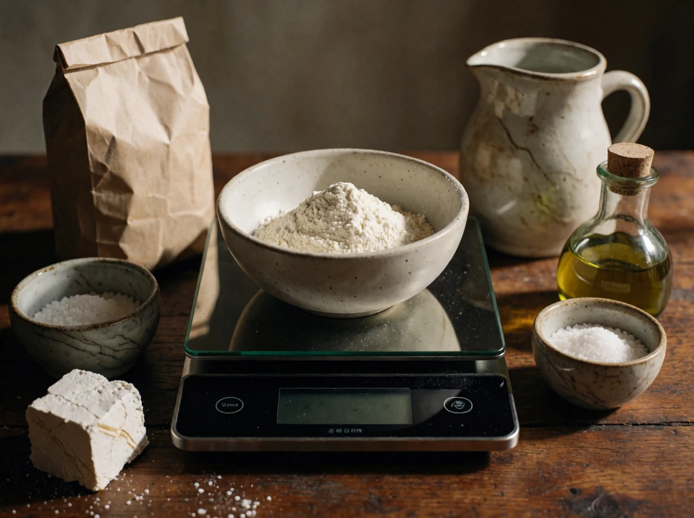
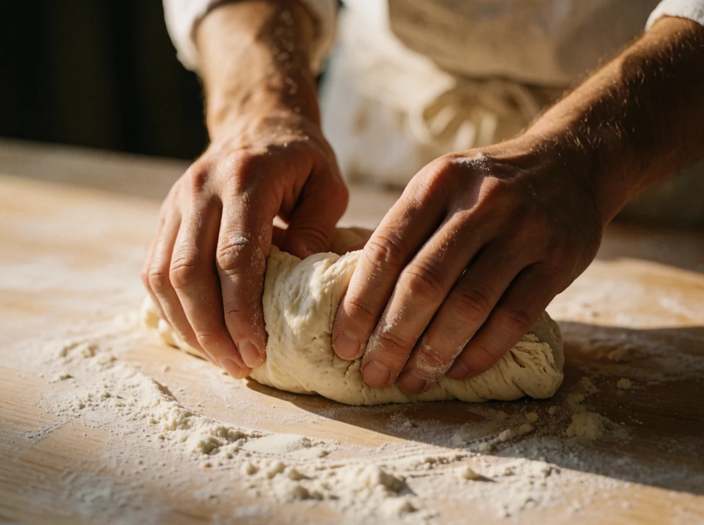
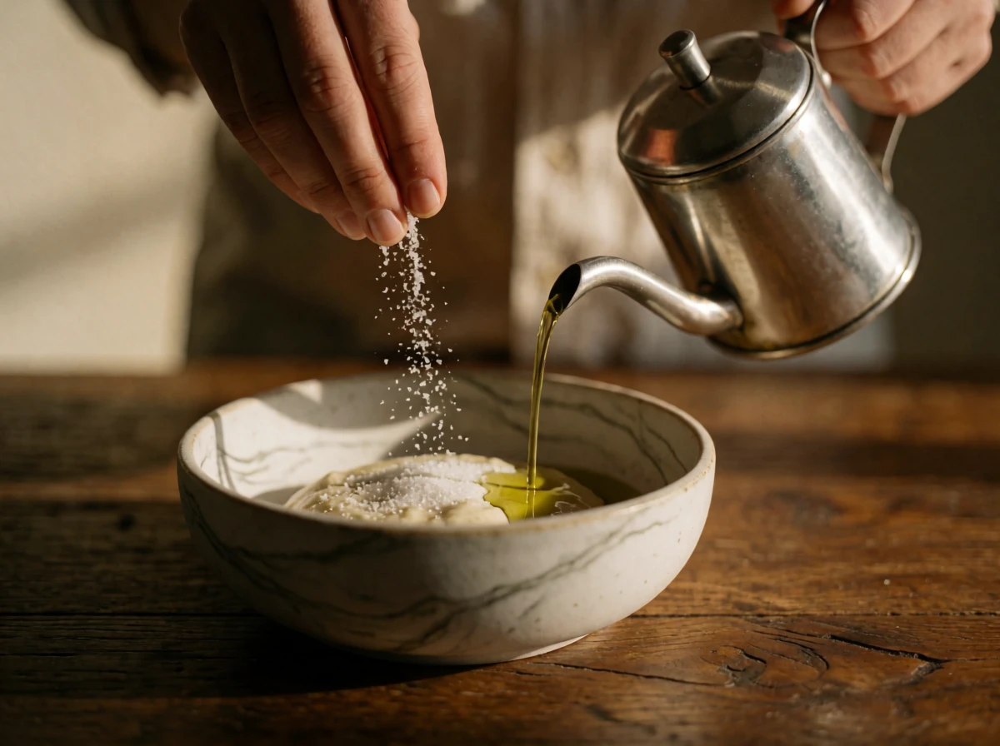
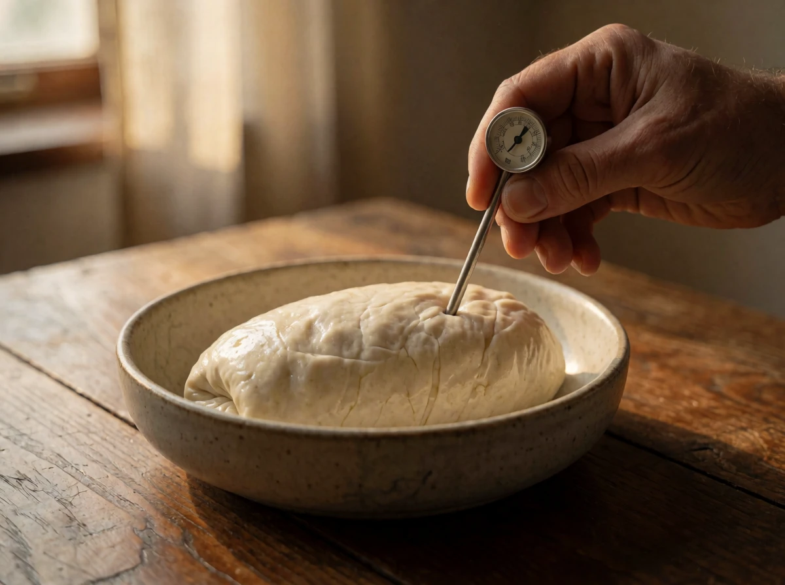
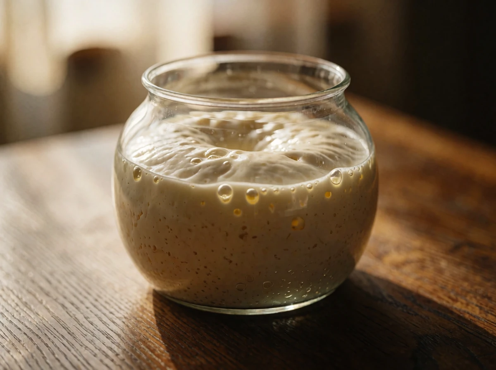
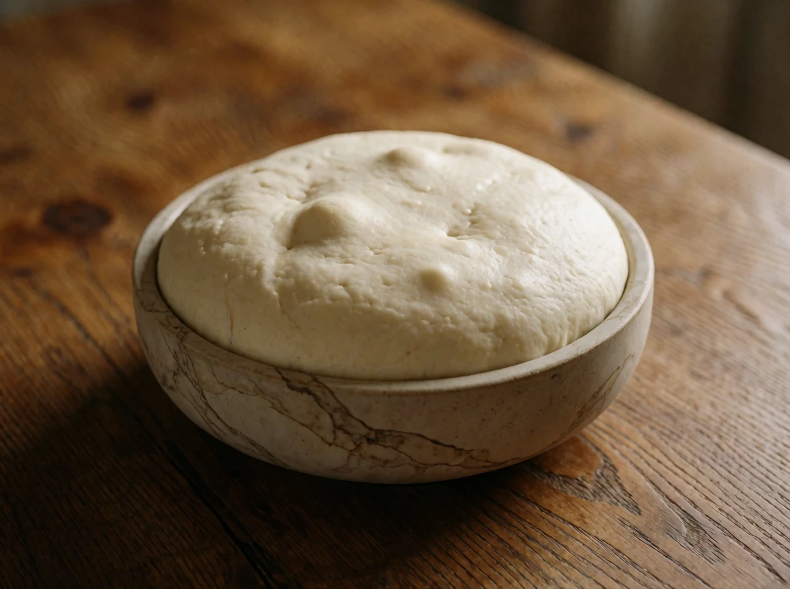

1
Zutaten abwiegen
5 MinWiege 620 g Mehl ab und stelle Waage, Schüssel und Teigkarte bereit.
Genau wiegen. Eine digitale Waage mit 1-g-Schritten macht bei der Hefe den Unterschied.

Wiege 620 g Mehl ab und stelle Waage, Schüssel und Teigkarte bereit.

Knete 8–10 Minuten, bis der Teig glatt ist und sich vom Schüsselrand löst.

Gib das Salz und 20 g Olivenöl dazu und mische alles gründlich, bis der Teig die Flüssigkeit vollständig aufgenommen hat und sich vom Schüsselrand zu lösen beginnt. Der Teig wirkt in den ersten Minuten klebrig und ungleichmäßig, das ist normal und gibt sich beim Kneten.
Gib 17 g Salz dazu und knete zwei Minuten weiter, bis es vollständig eingearbeitet ist.

Miss die Teigtemperatur. Sie sollte bei 24–26 °C liegen.

Lass den Poolish 12–16 Stunden abgedeckt stehen, bis die Oberfläche Blasen wirft und leicht einfällt.

Lass den Teig 4 Stunden abgedeckt bei Raumtemperatur ruhen.